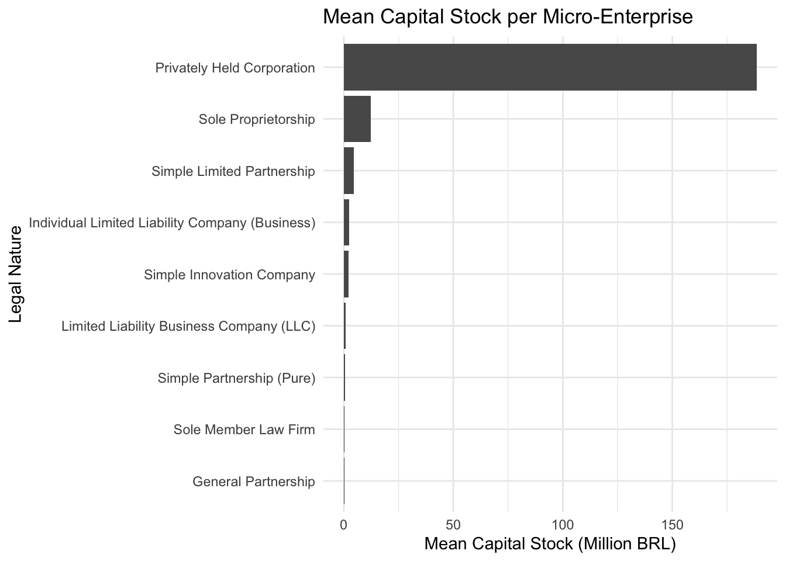
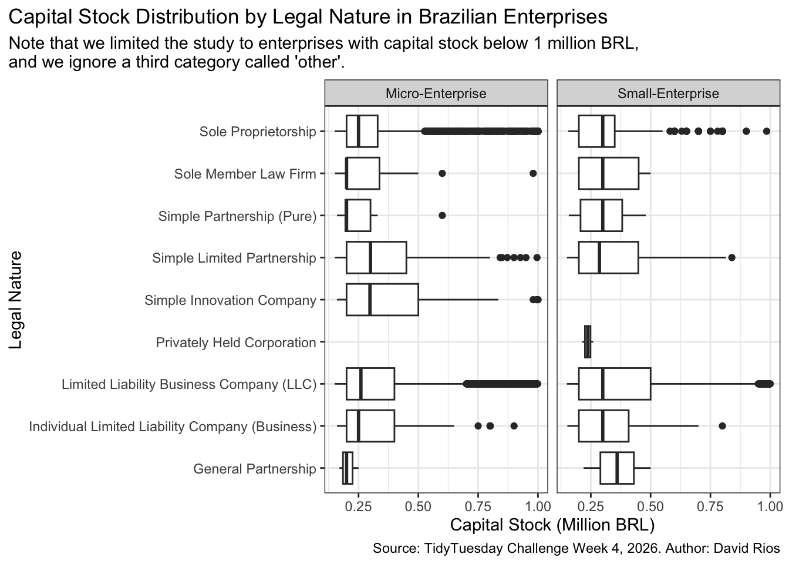

Week 4
TidyTuesday Challenge
TidyTuesday Section
Explore the week’s TidyTuesday challenge. Develop a research question, then answer it through a short data story with effective visualization(s). Provide sufficient background for readers to grasp your narrative.
Introduction
In this homework, I will explore capital stock distribution by legal nature in micro- and small-enterprises in Brazil. The data is obtained from the TidyTuesday challenge, a weekly challenge for users to explore data cleaning and storytelling! In this case, I’m working with the data correponding to the 4th week of 2026.
Importing the Data Set
Research Question
What’s the capital stock distribution by legal nature in micro- and small-enterprises in Brazil
Data Cleaning
I begin by loading the necessary libraries and importing the relevant datasets from the TidyTuesday repository. The primary dataset used in this analysis is companies, which contains information on firm size, legal nature, and declared capital stock.
Rows: 141,332
Columns: 6
$ company_id <dbl> 41273639, 41274138, 41274505, 41274745, 41274856, …
$ company_name <chr> "MH MATERIAIS DE CONSTRUCAO LTDA", "CLINICA ESTETI…
$ legal_nature <chr> "Limited Liability Business Company (LLC)", "Limit…
$ owner_qualification <chr> "Managing Partner / Partner-Administrator", "Manag…
$ capital_stock <dbl> 1000000, 200000, 500000, 159600, 200000, 300000, 1…
$ company_size <chr> "small-enterprise", "micro-enterprise", "small-ent…# A tibble: 3 × 2
# Groups: company_size [3]
company_size n
<chr> <int>
1 micro-enterprise 66202
2 other 42520
3 small-enterprise 32610Code
# A tibble: 9 × 2
legal_nature n
<chr> <int>
1 Limited Liability Business Company (LLC) 51591
2 Sole Proprietorship 14162
3 Simple Limited Partnership 155
4 Simple Innovation Company 144
5 Individual Limited Liability Company (Business) 108
6 Sole Member Law Firm 22
7 Simple Partnership (Pure) 14
8 General Partnership 3
9 Privately Held Corporation 3Code
# In Millions to avoid scientific notation
companies_micro <- companies_micro |>
mutate(capital_stock_m = capital_stock/1000000) |>
filter(capital_stock_m < 1000) # remove obvious far out value
# In Millions to avoid scientific notation
companies <- companies |>
mutate(capital_stock_m = capital_stock/1000000)Code
#bar plot mean
companies_micro |>
group_by(legal_nature) |>
summarise(mean_capital_m = mean(capital_stock_m)) |>
ggplot(aes(x = reorder(legal_nature, mean_capital_m), y = mean_capital_m)) +
geom_col() +
coord_flip() +
theme_minimal() +
labs(
title = "Mean Capital Stock per Micro-Enterprise",
x = "Legal Nature",
y = "Mean Capital Stock (Million BRL)")
Code
#bar plot median to see if any outliers remain / far out values
companies_micro |>
group_by(legal_nature) |>
summarise(median_capital_m = median(capital_stock_m)) |>
ggplot(aes(x = reorder(legal_nature, median_capital_m), y = median_capital_m)) +
geom_col() +
scale_fill_viridis_d() +
coord_flip() +
theme_minimal() +
labs(
title = "Median Capital Stock per Micro-Enterprise",
x = "Legal Nature",
y = "Mean Capital Stock (Million BRL)")
Code
companies |>
mutate(capital_stock_m = capital_stock / 1000000) |>
filter(capital_stock_m < 1,
company_size %in% c("micro-enterprise", "small-enterprise")) |>
ggplot(aes(x = legal_nature, y = capital_stock_m, fill = legal_nature)) +
geom_boxplot()+
scale_color_viridis_d() +
facet_wrap(~ company_size) +
coord_flip() +
theme_minimal() +
theme(legend.position = "none")+
labs(
title = "Capital Stock Distribution by Legal Nature in Brazilian Enterprises",
x = "Legal Nature",
y = "Capital Stock (Million BRL)")
Conclusions
To understand how capital stock varies by legal nature among micro-enterprises, I first examined both mean and median capital stock values. Comparing these two measures helps assess the influence of remaining outliers and skewness in the data.
Fig. 1 reveals the differences in how capital stock is distributed across legal forms for both micro- and small enterprises in Brazil. Even after restricting the study to firms with less than 1 million BRL in capital, given the amount of outliers, the spread and tendency of capital stock vary a lot by legal nature. Note that this study assumes that both micro- and small-enterprises reports their capital stock consciously.
For micro-enterprises, most legal forms are located at low levels of declared capital. But there some enterprises that contradicts this. For example, Limited Liability Business Companies (LLCs) and Individual Limited Liability Companies display wider spreads and more outliers, suggesting that these structures are associated with firms that declare more capital even within the smallest size category. This would be an interesting study to pursue further with more time.
Among small enterprises, these differences become more obvious. Legal forms such as LLCs and Simple Limited Partnerships have higher medians and greater variability, while simpler structures remain concentrated at lower capital levels. This pattern indicates that whenever enterprises grow, the choice of legal nature becomes more strongly associated with how much capital they report.
One challenge I had during this project was dealing with outliers. I decided to limit the study to those firms with less than 1 million BRL in capital, but I do recognize this is not the best way to go about it. Future studies should look at it from a proportion perspectives comparing to their median value in each legal category. Another possibility could be using a logarithmic transformation to emphasize proportional differences rather than absolute values on the capital stock variable.
Overall, our last visualization shows that legal nature is not just a formal label but carries information about the financial structure and scale of Brazilian enterprises. Even within the micro- and small-enterprise categories, organizational form is closely related to how much capital a firm declares.